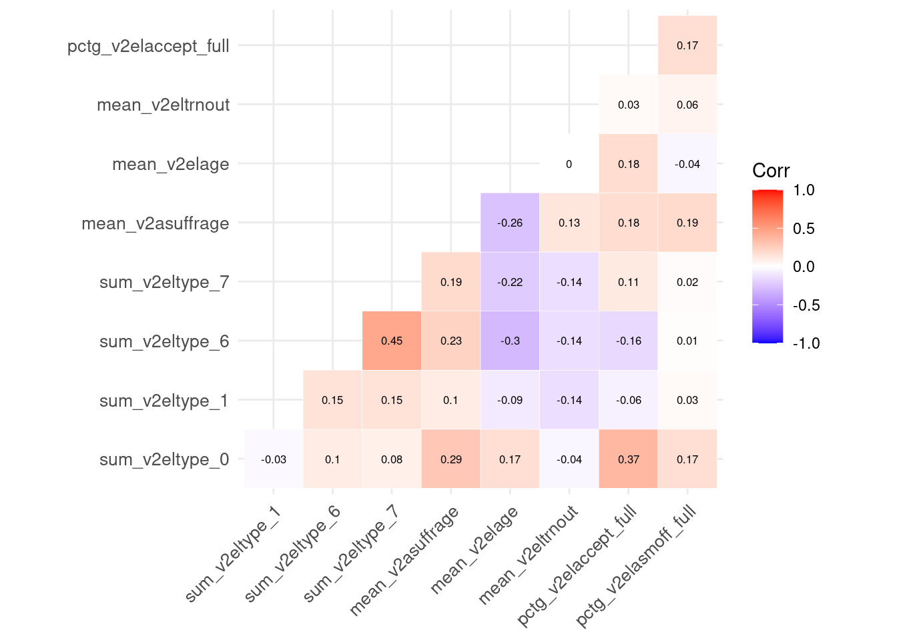
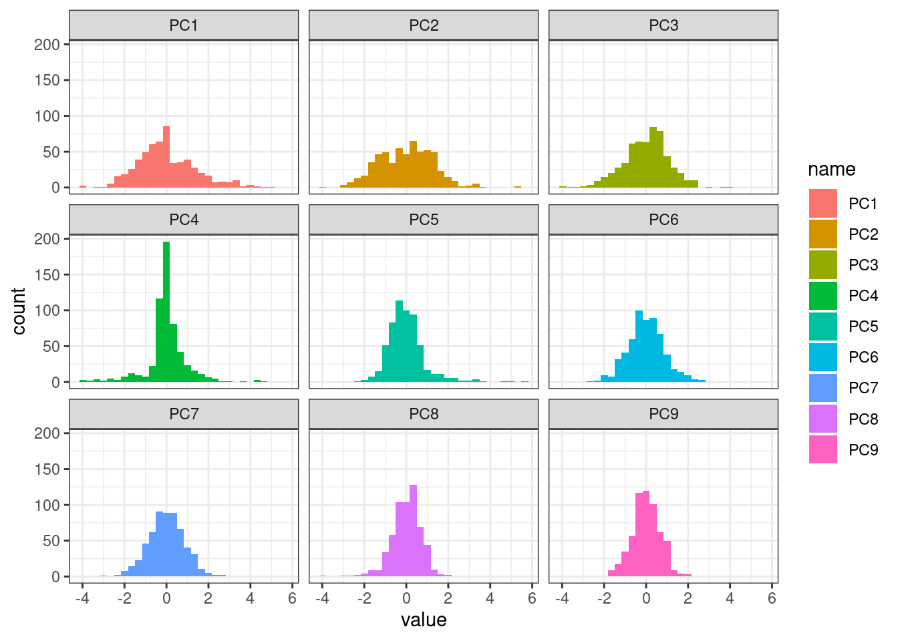
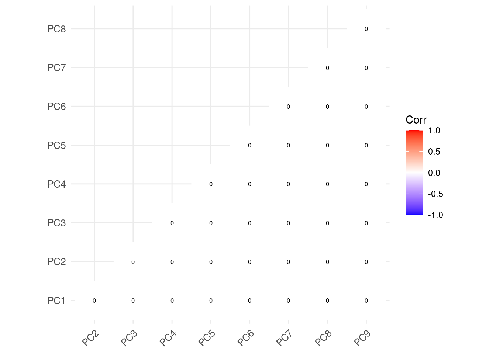

library(tidyverse) # to use things like the pipe (%>%)
library(tidymodels) # for model tuning, cross-validation etc.
# Vanity packages:
library(ggcorrplot)
library(ggsci) # we like pretty colours💻 Week 10 - Lab Roadmap (90 min)
DS202 - Data Science for Social Scientists
This week, we will demonstrate how to pre-process a dataset before running any ML model. After preprocessing, we will use Principal Component Analysis (PCA) to explore similarities and dissimilarities in the data.
Important
Download this page as an RMarkdown file from Moodle.
Setup
Packages you will need
Step 1: The Data (10 min)
In this lab we will use a subset of the V-Dem v12 dataset, the world’s most comprehensive and detailed democracy ratings. There are 764 variables and indicators in this dataset; you can read about each one of the variables in the V-Dem v12 Codebook. Here we chose just a few columns from the Historical V-Dem > Elections data collection (Chapter 4 of the Codebook).
Load the Data
Let’s load the data:
df <- read_csv("VDEM_v12_subset.csv")How many rows and columns are there in the dataset?
dim(df)[1] 27380 11What are the columns?
colnames(df) [1] "country_name" "year" "v2eltype_0" "v2eltype_1"
[5] "v2eltype_6" "v2eltype_7" "v2asuffrage" "v2eltrnout"
[9] "v2elage" "v2elaccept_ord" "v2elasmoff_ord"📚 REFERENCE: Here is a summary of the columns we selected:
v2eltype_0: Were there any first round legislative elections thisyearin thiscountry_name?v2eltype_1: Were there any second round legislative elections thisyearin thiscountry_name?v2eltype_6: Were there any first round presidential elections thisyearin thiscountry_name?v2eltype_7: Were there any second round presidential elections thisyearin thiscountry_name?v2asuffrage: What is the approximate percentage of enfranchised adults older than the minimal voting age?v2elage: What is the minimum voting age?v2eltrnout: What is the election turnout?v2elaccept_ord: Do election losers accept results? From 0 (None) to 4 (All).v2elasmoff_ord: Following this election, did winners assume office according to prescribed constitutional rules and norms? Range from 0 (No) to 2 (Yes)
Explore
🎯 ACTION POINT Type View(df) on the R console and hit ENTER to visualise the data.
View() does not work when knitting the file. So, to avoid future problems, as a good practice, it is best to run the View() function from the Console and not the R Markdown.
🗣️ CLASSROOM DISCUSSIONS Why are there so many NAs in this dataset? Share your observations of this dataset with the class teacher and your colleagues.
Step 2: Pre-process the data (50 min)
Time to make things a bit more interesting!
Say our goal is to compare countries based on the frequency of national elections (legislative and presidential) as well as things like average minimum voting age or average turnout over a common time period. Also, say we are only interested in data from the year 1900 onwards.
The data we have is not ready for this kind of analysis, so let’s spend some time reshaping it. (In real-life data science, 80% of the time is spent doing this kind of data preprocessing!).
Step 2.1. Add a period column
Let’s aggregate data about the countries over a common 20-year time window period.
We use the arithmetic operation of integer division to make this possible here.
tmp_df <-
df %>%
filter(year >= 1900, year < 2020) %>%
mutate(period=paste0("[", 20 * (year %/% 20),
"-", 20 * (year %/% 20) + 19, "]"))
# Selecting these columns just to make it easier to visualize
tmp_df %>%
select(country_name, year, period) %>%
head(n=40)# A tibble: 40 × 3
country_name year period
<chr> <dbl> <chr>
1 Mexico 1900 [1900-1919]
2 Mexico 1901 [1900-1919]
3 Mexico 1902 [1900-1919]
4 Mexico 1903 [1900-1919]
5 Mexico 1904 [1900-1919]
6 Mexico 1905 [1900-1919]
7 Mexico 1906 [1900-1919]
8 Mexico 1907 [1900-1919]
9 Mexico 1908 [1900-1919]
10 Mexico 1909 [1900-1919]
# … with 30 more rowsStep 2.2. Count the number of elections per election type
Run the code below and type View(tmp_df):
tmp_df <-
# The same pre-processing as before
df %>%
filter(year >= 1900, year < 2020) %>%
mutate(period=paste0("[", 20 * (year %/% 20),
"-", 20 * (year %/% 20) + 19, "]")) %>%
# This bit is new
group_by(period, country_name) %>%
summarize(across(c(v2eltype_0, v2eltype_1, v2eltype_6, v2eltype_7),
~ sum(., na.rm=TRUE),
.names = "sum_{.col}"),
.groups="keep")🤝 WORKING TOGETHER: Now, in groups or in pairs, can you explain why the dimensions our (new) temporary data frame tmp_df is different to the original data frame df?
dim(tmp_df)[1] 982 6🤝 WORKING TOGETHER: What do the columns of tmp_df represent?
your notes here
Step 2.3. Take the average of suffrage levels, voting age and turnout rate
Each period can contain multiple elections so variables such as v2asuffrage, v2elage and v2eltrnout cannot be used as they are, we need to aggregate them somehow.
Let’s use the same combo of summary+across as before and create columns to contain the mean of these values:
tmp_df <-
# The same pre-processing as before
df %>%
filter(year >= 1900, year < 2020) %>%
mutate(period=paste0("[", 20 * (year %/% 20),
"-", 20 * (year %/% 20) + 19, "]")) %>%
# It's a different summarise!
group_by(period, country_name) %>%
summarize(across(c(v2asuffrage, v2elage, v2eltrnout),
~ mean(., na.rm=T),
.names = "mean_{.col}"),
.groups="keep")🤝 WORKING TOGETHER: In groups or in pairs, take a look at the new tmp_df, pay close attention to the NAs in this data frame. Then, answer the following questions:
- How would you handle these NAs? Should we remove all rows that contain NA or should we replace the NAs by some value (a process called [data imputation](https://www.wikiwand.com/en/Imputation_(statistics)?
your notes here
🗣️ CLASSROOM DISCUSSIONS: Share your thoughts!
Step 2.4. Winners and Losers
In the original data, v2elaccept_ord == 4 when the losers of all national elections in a particular year conceded defeat, and v2elasmoff_ord == 2 when all winners assumed office according to the result of elections without any restrictions.
Out of all elections that happens in a period, what percentage of winners fully assumed office and what percentage of losers fully conceded defeat?
tmp_df <-
# The same pre-processing as before
df %>%
filter(year >= 1900, year < 2020) %>%
mutate(period=paste0("[", 20 * (year %/% 20),
"-", 20 * (year %/% 20) + 19, "]")) %>%
group_by(period, country_name) %>%
# This bit is new!
summarise(pctg_v2elaccept_full=sum(v2elaccept_ord == 4, na.rm=T)/sum(!is.na(v2elaccept_ord)),
pctg_v2elasmoff_full=sum(v2elasmoff_ord == 2, na.rm=T)/sum(!is.na(v2elasmoff_ord)),
.groups="keep") 🎯 ACTION POINT Once again, type View(tmp_df) on the R console and hit ENTER to visualise the data.
Step 2.5 Putting it all together
The code below combines what we have done in Steps 2.1-2.4 above. Run it and View(df_preprocessed) to see the output. We will use the is_all_NAs column to filter out the true NAs afterwards.
df_preprocessed <-
df %>%
filter(year >= 1900, year < 2020) %>%
mutate(period=paste0("[", 20 * (year %/% 20),
"-", 20 * (year %/% 20) + 19, "]")) %>%
# It's a different summarise!
group_by(period, country_name) %>%
summarize(across(c(v2eltype_0, v2eltype_1, v2eltype_6, v2eltype_7),
~ sum(., na.rm=T),
.names = "sum_{.col}"),
across(c(v2asuffrage, v2elage, v2eltrnout),
~ mean(., na.rm=T),
.names = "mean_{.col}"),
pctg_v2elaccept_full=sum(v2elaccept_ord == 4, na.rm=T)/sum(!is.na(v2elaccept_ord)),
pctg_v2elasmoff_full=sum(v2elasmoff_ord == 2, na.rm=T)/sum(!is.na(v2elasmoff_ord)),
.groups="keep") %>%
ungroup()How many time periods are we talking about?
df_preprocessed %>% distinct(period) %>% as.list()$period
[1] "[1900-1919]" "[1920-1939]" "[1940-1959]" "[1960-1979]" "[1980-1999]"
[6] "[2000-2019]"dim(df_preprocessed)[1] 982 11Step 2.6. Handling missing data
Where are the NAs?
df_preprocessed %>% summarise(across(everything(),~ sum(is.na(.)))) %>% t() [,1]
period 0
country_name 0
sum_v2eltype_0 0
sum_v2eltype_1 0
sum_v2eltype_6 0
sum_v2eltype_7 0
mean_v2asuffrage 4
mean_v2elage 317
mean_v2eltrnout 380
pctg_v2elaccept_full 246
pctg_v2elasmoff_full 246Here we choose the “lazy” path, let’s just ignore the rows that contain any NA:
df_preprocessed <- df_preprocessed %>% na.omit()dim(df_preprocessed)[1] 583 11💡 You might disagree with this strategy of handling missing data, and that is great! If you have an alternative strategy in mind, do share it with us on Slack! I would be curious to hear about it.
Step 3. PCA (30 min)
PCA is a linear technique that recombines data onto a new set of variables with useful properties. Most commonly, PCA is used to reduce the dimensionality of a dataset and to understand similarities in the data.
Step 3.1 Training PCA
Here we take a pragmatic approach. Let’s try to understand the technique by comparing our current dataset to the new data that will be produced by PCA.
df_preprocessed has 11 columns, 9 are predictors whereas the other 2 columns are identifiers (country_name and period). Let’s look at the correlation between the features:
df_preprocessed %>%
select(-country_name, -period) %>%
na.omit() %>%
cor() %>%
ggcorrplot(outline.col = "white", lab=TRUE,
type="lower", lab_size=2.2, tl.cex=10)
🏠 TAKE-HOME ACTIVITY: This week, instead of coding exercises, we suggest you practice some more tidymodels. We will point to a few suggested official tutorials. In this section, we need to use something called recipes; read the Preprocess your data with recipes tutorial on tidymodel’s website to learn more.
Now, let’s see how you could train PCA using the tidymodels package:
pca_recipe <-
# First we specify a recipe of what data we are using
recipe(~ ., data = df_preprocessed) %>%
# Columns period and country_name are not to be used as predictors.
# That is why we update their roles in the recipe
update_role(period, new_role = 'id') %>%
update_role(country_name, new_role = 'id') %>%
# PCA requires that data have the same distribution
# This can be achieved by normalizing the data (mean=0 and std=1)
step_normalize(all_predictors()) %>%
# This is where we tell the recipe to run PCA and return 9 Principal Components
step_pca(all_predictors(), num_comp=9)
# pca_recipe created a recipe, but it didn't run any of those steps.
# To train the PCA, we have to prepare the recipe -- with prep()
pca_prep <- prep(pca_recipe)The object pca_recipe contains a recipe and we can choose to prepare a recipe (prep()) at any time.
Step 3.2 Look at the new data
Now that we have prepared our recipe, let’s bake it using our ingredients (the data):
new_df <- bake(pca_prep, df_preprocessed)🎯 ACTION POINT Once again, type View(new_df) on the R console and hit ENTER to visualise the new data frame.
🗣️ CLASSROOM DISCUSSIONS: What do you think the columns in this data frame represent?
How are these variables distributed?
plot_df <- pivot_longer(new_df, PC1:PC9)
ggplot(plot_df, aes(x=value, fill=name)) + geom_histogram() + theme_bw() + facet_wrap(~ name)`stat_bin()` using `bins = 30`. Pick better value with `binwidth`.
Correlation plot
🗣️ CLASSROOM DISCUSSIONS: Observe the correlation plot below. Why do you think there is no correlation between any predictor?
new_df %>%
select(-country_name, -period) %>%
cor() %>%
ggcorrplot(outline.col = "white", lab=TRUE,
type="lower", lab_size=2.2, tl.cex=10)
💡 If you create a ggpairs() plot, you will see what zero correlation means. Each pairwise combination of features produces a scatter plot that look essentially like a random cloud of points.
Step 3.3. Looking closer…
These properties of the new data set were produced by design!
💡 PCA “rearranges” the original data matrix, producing a new data matrix where all features are intentionally completely uncorrelated to each other.
This is the key takeaway of PCA. If you remember only one thing about this technique, remember the sentence above!
For example, this is how PC1 is constructed from the other predictors:
\[ \text{PC1} = + 0.21799702 \times \text{sum_v2eltype_0}^* + 0.24465538 \times \text{sum_v2eltype_1}^* +0.51687063 \times \text{sum_v2eltype_1}^* + 0.49560420 \times \text{sum_v2eltype_7}^* +0.44277858 \times \text{mean_v2asuffrage}^* - 0.36757212 \times \text{mean_v2elage}^*-0.11972783 \times \text{mean_v2eltrnout}^* + 0.07999905 \times \text{pctg_v2elaccept_full}^* +0.16716920 \times \text{pctg_v2elasmoff_full}^* \]
where we marked predictors with an asterisk just to remind us that these are not the raw data, but the normalised values of those features.
The equation above looks familiar, right? Indeed, the way PCA calculates these weights (they are called loadings) bares some similarity to how a linear regression problem is solved.
With the code below, we get to see how PCA calculated the other Principal Components.
pca_prep$steps[[2]]$resStandard deviations (1, .., p=9):
[1] 1.4023368 1.3007266 1.0920261 0.9766697 0.9119316 0.8625327 0.8404571
[8] 0.6997937 0.6507657
Rotation (n x k) = (9 x 9):
PC1 PC2 PC3 PC4
sum_v2eltype_0 0.21799702 -0.53291377 -0.22914212 0.13663944
sum_v2eltype_1 0.24465538 0.16727953 -0.23620529 -0.73134871
sum_v2eltype_6 0.51687063 0.22326016 -0.07746218 0.22722123
sum_v2eltype_7 0.49560420 0.08295731 -0.19709763 0.26956753
mean_v2asuffrage 0.44277858 -0.25885010 0.33984115 -0.02374631
mean_v2elage -0.36757212 -0.31040794 -0.42191240 -0.01312946
mean_v2eltrnout -0.11972783 -0.16864188 0.69229053 0.09535488
pctg_v2elaccept_full 0.07999905 -0.57603673 -0.16594779 0.09195054
pctg_v2elasmoff_full 0.16716920 -0.32814417 0.21574560 -0.55125208
PC5 PC6 PC7 PC8
sum_v2eltype_0 0.054907792 -0.49128600 -0.09356601 -0.41886831
sum_v2eltype_1 0.539181349 0.04632277 -0.06176915 -0.15736453
sum_v2eltype_6 -0.091587177 -0.23055309 -0.40810152 -0.14944996
sum_v2eltype_7 0.005748874 0.56282577 -0.23848959 0.20309696
mean_v2asuffrage 0.238040294 -0.28970122 0.28978589 0.62790608
mean_v2elage 0.154719253 -0.06468444 -0.53412624 0.50688248
mean_v2eltrnout 0.408344599 0.17219205 -0.47740314 -0.20914392
pctg_v2elaccept_full 0.135679655 0.50324045 0.31887335 -0.20027917
pctg_v2elasmoff_full -0.657336929 0.12471072 -0.25523550 0.03395968
PC9
sum_v2eltype_0 0.410757481
sum_v2eltype_1 0.007488321
sum_v2eltype_6 -0.612327279
sum_v2eltype_7 0.470158352
mean_v2asuffrage -0.045342913
mean_v2elage -0.141465088
mean_v2eltrnout 0.028567184
pctg_v2elaccept_full -0.460799723
pctg_v2elasmoff_full 0.002797427What else is there? Let’s look at the summary() of PCA:
summary(pca_prep$steps[[2]]$res)Importance of components:
PC1 PC2 PC3 PC4 PC5 PC6 PC7
Standard deviation 1.4023 1.3007 1.0920 0.9767 0.9119 0.86253 0.84046
Proportion of Variance 0.2185 0.1880 0.1325 0.1060 0.0924 0.08266 0.07849
Cumulative Proportion 0.2185 0.4065 0.5390 0.6450 0.7374 0.82005 0.89853
PC8 PC9
Standard deviation 0.69979 0.65077
Proportion of Variance 0.05441 0.04706
Cumulative Proportion 0.95294 1.00000The table below indicates that if we chose to use only the first 5 Principal Components (PC1, PC2, PC3, PC4, PC5) instead of all of them and instead of the original dataframe, we would still have preserved 70% of the variance in this data.
🏠 TAKE-HOME ACTIVITY: Check out this tutorial on Dimensionality Reduction